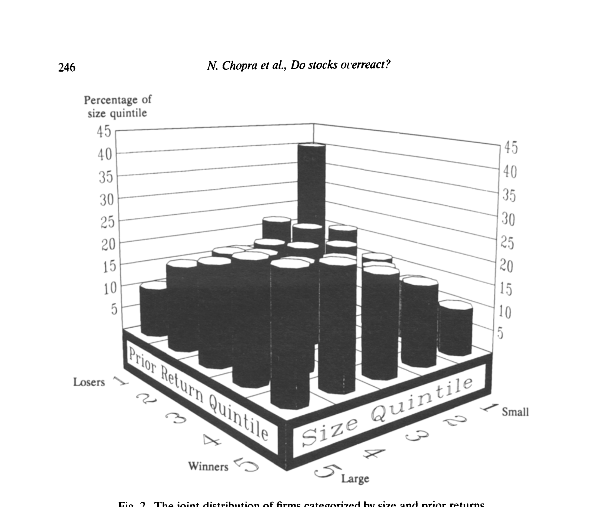
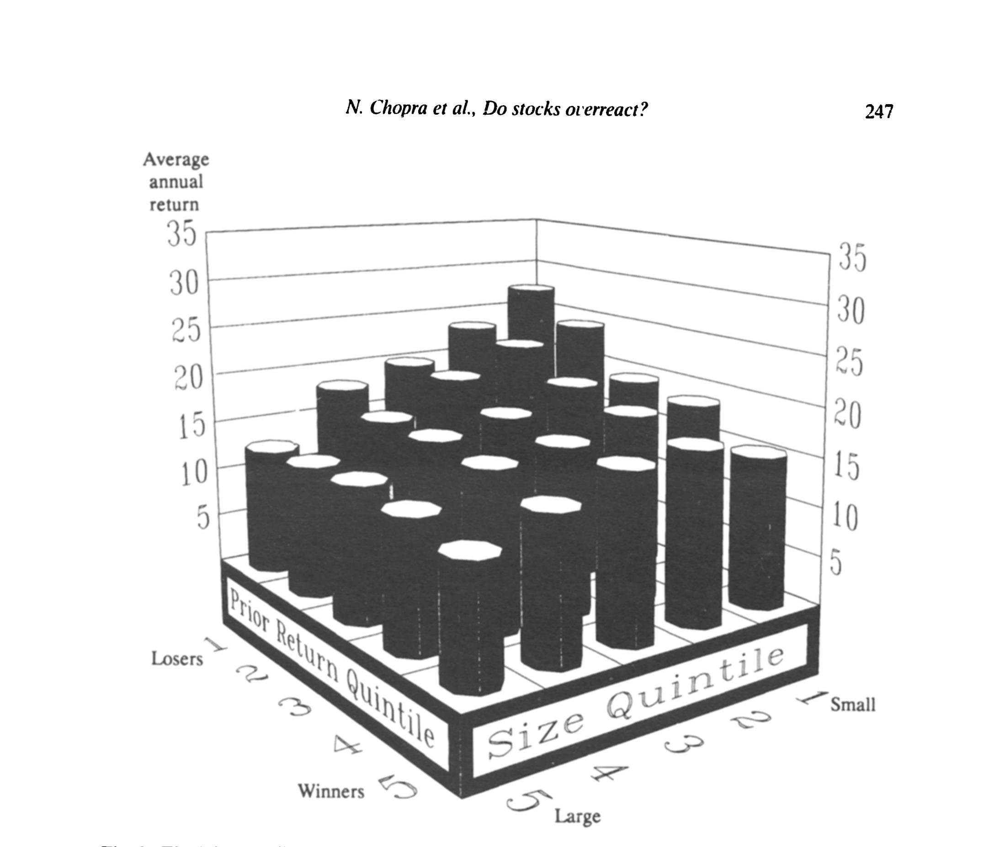
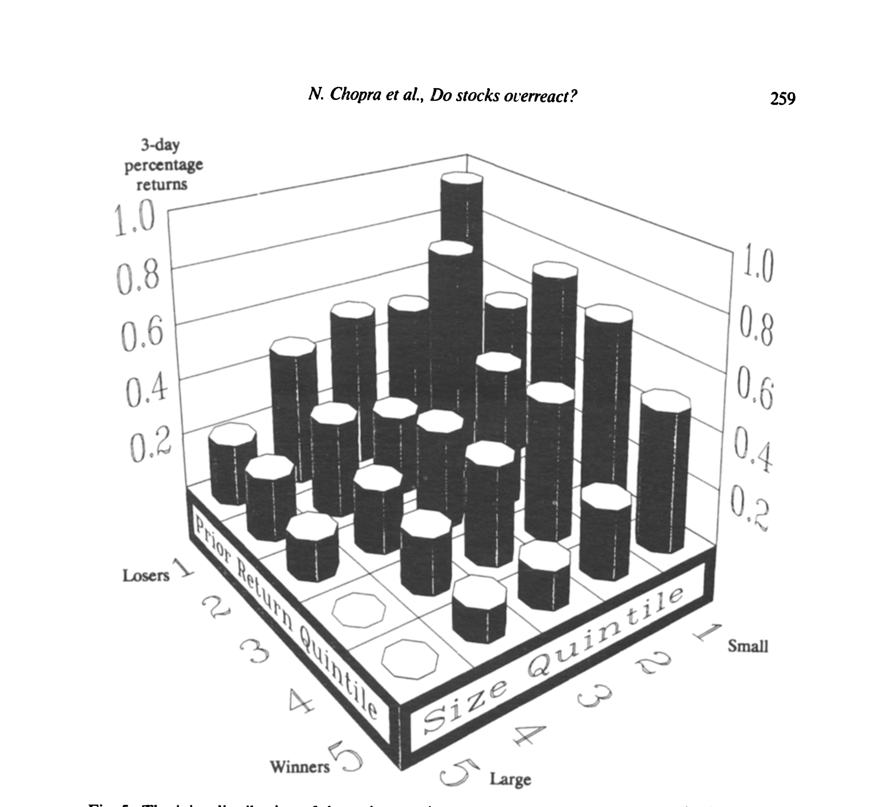
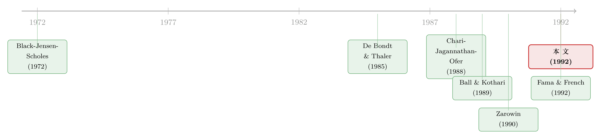

「输家会翻身」这件事，究竟是市场犯傻，还是我们量错了风险？
本文读的是 Chopra, Lakonishok & Ritter (1992, Journal of Financial Economics)：把「过度反应」放进一台同时校准了 beta、规模、以及短窗事件的检验机器里反复拷问，结论是——即便用经验估计的风险价格、并仔细剔除规模的干扰，极端输家组合仍以每年约 5%–10% 跑赢极端赢家；这个效应在小公司里尤其强，而且在季度盈余公告的三日窗口里再次现身。换言之，过度反应没被「风险」洗掉。
1 一个让财务经济学家坐立不安的发现
先把舞台搭起来。
1985 年，De Bondt 和 Thaler 抛出一个让人不太舒服的结果：把股票按过去三到五年的累计表现排队，过去的输家（losers）在随后的三到五年里，会反过来跑赢过去的赢家（winners）。他们给这个现象起了个带价值判断的名字——过度反应（overreaction）：投资者对坏消息反应过头，把输家股票砸得太低，于是价格迟早要「弹回来」。
这话要是成立，麻烦就大了。它等于说，市场会系统性地把价格定错，而且这个错误大到可以拿来赚钱。对于一个信奉「价格反映一切」的学科来说，这几乎是异端。
于是，质疑接踵而至。而且质疑的方式非常聪明：它们不否认「输家确实跑赢了赢家」这个事实，而是说——你算错了「应得的收益」。
这就是所有长期收益异象都绕不开的那道坎：你观察到的「超额收益」，到底是真的反常，还是只是因为你用错了风险基准？这正是本文标题里那个谦逊到有点别扭的词——Measuring（测量）——的由来。
2 两记反驳：杠杆抬高了 beta，规模偷换了概念
第一记反驳来自 Chan (1988) 和 Ball & Kothari (1989)，核心是杠杆。
逻辑是这样的：一家公司连续几年收益为负，它的股价跌、市值缩水，于是债务占比（杠杆）被动抬高。而股权 beta 既取决于资产风险，也取决于杠杆——杠杆一升，股权 beta 就升。所以输家在排序期末天然是高 beta 的，赢家则是低 beta 的。高 beta 本就该有高收益，这哪是什么过度反应，分明是风险补偿。
Ball & Kothari 把这条逻辑量了出来：排序期后，极端输家的 beta 比极端赢家高出整整 0.76。配上历史上 14%–16% 那么高的市场风险溢价，这一档 beta 差距足以解释掉绝大部分的收益差。他们算下来，扣掉风险后两端组合的 alpha 差只剩 3.9%，并judged为「经济上不重要」。
第二记反驳来自 Zarowin (1990)，核心是规模（size）。输家组合里小公司扎堆，而小公司本来就有更高的预期收益（规模效应）。所以输家跑赢赢家，可能只是规模效应换了身衣服。
两记反驳都很有杀伤力。问题于是变得清晰：要替过度反应翻案，就必须证明——在「老老实实」扣掉 beta 和规模之后，那笔超额收益依然还在。本文要做的，就是把这件「测量」的活儿做到极致。
3 第一步：别用 CAPM 假设的风险价格，用数据自己说的那个
这是本文最关键、也最容易被忽略的一步。
Ball & Kothari 的结论严重依赖一个假设：市场对每单位 beta 风险的补偿，等于 Sharpe-Lintner 资本资产定价模型 (Sharpe-Lintner CAPM) 所说的市场风险溢价 \(r_m - r_f\)。用等权 NYSE 组合算，这个数高达 14%–16%。beta 差 0.76、再乘上这么高的单价，自然能「吃掉」大半收益差。
但这个假设站得住吗？
作者搬出了一长串实证文献——Black, Jensen & Scholes (1972)、Miller & Scholes (1972)、Lakonishok & Shapiro (1986)、Ritter & Chopra (1989) 等等——它们几乎无一例外地发现，实证的证券市场线 (security market line, SML) 远比 CAPM 预言的要平。更激进的，Fama & French (1992) 干脆质疑：beta 和已实现收益之间，到底还有没有关系。
这一步的精神是：与其相信一个高度结构化的理论模型替你「假设」风险的价格，不如让数据自己估出这个价格。当赢家和输家的 beta 差得很大时，「单价」定多高，直接决定了你能把多少收益差算成「风险补偿」。在多数研究里组合 beta 都接近 1.0，这个假设无伤大雅；可在这篇研究里，赢家和输家的 beta 天差地别，假设的对错就成了生死攸关的事。
作者怎么估这个经验单价？他们用完全相同的样本和方法，但改按排序期 beta（而非过去收益）把股票分成 20 个组合，跑出已实现收益和 beta 的关系。结果这条经验 SML 的截距是 8.5%、斜率是 9.5%（年度数据）。
注意这两个数字：8.5% 的截距，远高于样本期约 3.5% 的无风险利率；9.5% 的斜率，则远低于 CAPM 假设的 14%–16%。线，确实是平的。
于是反转开始了。先看不扣风险的原始差距：
$$ r_1 = 27.3\%, \qquad r_{20} = 13.3\%, \qquad r_1 - r_{20} = 14.0\% \text{ per year} $$
组合 1（输家）排序期后年均收益 27.3%，组合 20（赢家）只有 13.3%，一年差 14 个百分点；五年不复利就累计到 70%。
- 若按 Sharpe-Lintner 的高单价扣 beta：两端 alpha 差只剩
2.5%（甚至比 Ball & Kothari 的 3.9% 还小）。 - 若按 经验 SML 扣 beta：赢家组合比同 beta 基准低
3.4%，输家组合比同 beta 基准高3.1%，两者一加，abnormal return 之差是6.5%。
同一批数据，仅仅因为对 SML 斜率的假设不同，过度反应的估计就从 2.5% 跳到 6.5%。这正是本文想钉死的一点：是 CAPM 那条过陡的线，制造了「过度反应不存在」的假象。（关于「换一把尺子，反转策略的钱就重新冒出来」这件事，也可参见《反转策略的钱，到底是「捡来的」还是「赚来的」？》。）
换成价值加权指数，两端 alpha 差进一步从 2.5% 扩大到 4.7%；用月度数据则是 0.50% 每月（约 6%/年），配经验 SML 后输家跑赢赢家高达 9.5%/年。无论怎么换基准，方向从不改变，只是大小在变。
4 第二步：给规模做一次「不过度矫正」的清洗
扣完 beta，还得处理 Zarowin 的规模质疑。
规模和过去收益的相关有多强？看图 2 就一目了然：在最小规模五分位里，40% 的公司落在极端输家档，只有 10% 落在极端赢家档。输家是「小公司俱乐部」，这是铁的事实。

Figure 2: The joint distribution of firms categorized by size and prior returns
正因为这种强相关，简单的规模调整反而危险：因为小公司组合里塞了过多的输家，常规的规模匹配会「过度矫正」——把本属于过度反应的收益，错误地归给规模，从而压低你想找的那个效应。
作者的巧招是「清洗」（purging）：在构造规模对照组合时，把那些本身就是极端输家（组合 1–5）和极端赢家（组合 16–20）的公司从规模总体里剔除出去，再用「干净」的中段公司来匹配规模。这样规模对照组就不会被极端表现者污染。
结果（表 2）很说明问题。先看持有规模不变、过去收益不变时各自的边际效应：holding size constant，极端输家五分位比极端赢家五分位高 5.4%/年；holding prior returns constant，最小规模五分位比最大规模五分位高 8.2%/年——两种效应都真实存在。

Figure 3: T~v joint distribution of average annual returns in the post-ranking period categorized by
而两端组合的规模调整后收益差：
$$ (r_1 - r_{20})_{\text{unpurged}} = 6.6\% \text{ per year}, \qquad (r_1 - r_{20})_{\text{purged}} = 9.7\% \text{ per year} $$
注意：清洗之后效应不是变小、而是变大（从 6.6% 涨到 9.7%）。这恰恰印证了「简单规模调整会过度矫正」的担忧。规模效应是真的，但它吃不掉过度反应——两个独立的效应叠在一起，而非一个冒充另一个。
5 真正关键的一步：把审判挪到「三天」的窗口里
走到这里，作者其实已经赢了大半。但他们很清楚一个软肋：任何在多年长窗口上测出来的「超额收益」，都对基准的选择极度敏感——你永远可以质疑「也许还有某个没被控制的风险」。
长窗口收益是异象研究的「原罪」：窗口越长，对 benchmark 误设的累积越严重。所以这类证据常被怀疑地对待。
于是真正关键的一步出现了：把战场搬到极短的窗口——季度盈余公告（earnings announcement）前后的三天。这个思路借自 Bernard & Thomas (1989, 1990) 研究盈余公告漂移的做法。
为什么这招狠？因为在仅仅三天里，风险补偿能累积的量微乎其微，benchmark 误设几乎无关紧要。如果过度反应是真的——市场系统性地低估了输家、高估了赢家——那么当新的盈余信息到来、市场被迫「对账」时，输家应当带来正的公告期收益，赢家则相反。这是一个几乎不受风险测量问题污染的、对过度反应的直接检验。
作者翻遍 Compustat 的季度工业、历史与研究文件，凑出 227,522 个盈余公告（限于 1970–81 排序期，因早年公告日数据不全），算每个公告 [-2, 0] 三日窗口的原始收益。
证据来了：组合 1（输家）的平均三日公告期收益是 0.63%，组合 20（赢家）则约等于零。再按规模和过去收益双重分组看图 5——最小的极端输家三日赚 0.958%，最大的极端赢家只有 0.001%。

Figure 5: The joint distribution of three-day earnings announcement returns categorized by market
但这里有个干扰项必须排除：Chari, Jagannathan & Ofer (1988) 发现，小公司在公告期本就有更高收益（公告期信息流大、风险高），而输家恰恰多是小公司。所以必须同时控制规模和风险。作者跑了一个组合层面的回归（表 6，基于 394 个组合）：
关键就是过去收益那一项的系数 -0.0142：把它乘以 $(1-20)$，得到极端输家与赢家之间每个公告 0.27% 的差。一年有四次季度公告，于是仅这 12 个交易日，就贡献了每年 1.08% 的差距。这与长窗口的结论同向、互证。Hand (1990) 也提供了佐证：公告效应的大小，取决于个人投资者持股的比例。
到这一步，反驳者最后的退路被堵死了：过度反应不是长窗口里某个没控住的风险幻觉，它在三天的显微镜下依然清晰可见。
6 一条意味深长的横切：小公司、个人、与机构
还有一个反复出现、且耐人寻味的横截面规律：过度反应在小公司里强得多，在最大的公司里至多只有微弱证据。
作者顺势抛出一个解读：小公司主要由个人持有，大公司主要由机构持有。也许是个人会过度反应，而机构不会。这只是一个 interpretation，不是被识别出来的因果，但它把这条异象和「谁在交易、谁的信念有偏」连了起来——这也是后来一整支行为金融文献的母题。（关于「公告日那几天 beta 才真正值钱」的另一面，可参见《一年只有那么几天，beta 才真正值钱》；关于过度反应与记忆、外推的微观基础，可参见《好消息让你想起好消息：把「过度反应」拆回记忆的联想》。）
顺带一提样本里的一个细节：约 22% 的极端输家公司在排序期后被退市，而极端赢家只有 8%。1930 年代多因破产退市，1970 年代则多因被收购。作者不像 Ball & Kothari 那样要求公司全程存活（那会引入幸存者偏差），退市当年用 CRSP 等权指数收益补全——这也是两文数字略有出入的原因之一。
7 文献脉络
把这条线理一理。
源头是反转与有效市场之争。De Bondt & Thaler (1985) 用「输家翻身」给市场贴上「过度反应」的标签，是这条线的起点（他们当年测出的五年差距约 8%/年，比本文的 14% 小，主要因组合定义和样本期不同）。
紧接着是反扑的两年：Chan (1988) 与 Ball & Kothari (1989) 用杠杆抬高的 beta 把异象「解释」掉，Zarowin (1990) 则用规模效应另起一说。与此同时，一支更老的实证传统——Black, Jensen & Scholes (1972) 一路到 Fama & French (1992)——持续指出实证 SML 远比 CAPM 平，这恰好成了本文翻案的弹药。

本文（1992）站在这个交汇点上：它不和理论模型硬碰，而是用经验风险价格 + 不过度矫正的规模清洗 + 短窗事件检验这套组合拳，把过度反应从「风险/规模的伪装」里重新解放出来。它和同期 Bernard & Thomas (1989, 1990) 的盈余公告漂移、Chari, Jagannathan & Ofer (1988) 的公告期风险，共同构成了「短窗口绕开 benchmark 难题」的方法论自觉。
8 评论与延伸（Q&A + 研究方向）
(a) 几个可能的疑问
Q：这和「动量」（momentum）不是矛盾吗？短期是赢家继续赢，长期却是输家翻身？
不矛盾，恰恰是互补。本文研究的是三到五年的长期反转，而动量说的是3–12 个月的短期延续。两者描述的是收益自相关在不同 horizon 上的符号不同：短期正、长期负。作者自己也提到，用过去一年收益排序时反转弱得多。（关于反转究竟是「过度反应」还是「负协方差」，也可参见《负的协方差，凭什么就证明了「过度反应」？》。）
Q：用「经验 SML」会不会反过来「低估」了 beta 的作用，把本属于风险的部分算成了 alpha？
这是最该担心的一点，而且作者很诚实：他们指出 RATS 程序因为 beta 是与事后收益同期估计的，反而可能高估实证收益与 beta 的关系（即斜率被往上拉）。即便如此，斜率仍只有 9.5%，远低于 CAPM 的 14%–16%。所以若说有偏，方向是让过度反应被低估，而非夸大。
Q：盈余公告窗口的 0.27%/公告，会不会只是「公告期小公司风险溢价」？
表 6 的回归正是为堵这个洞而设：在同时放入 SIZE 和 Beta 之后，过去收益的系数仍然显著为负（t = -2.55）。也就是说，控制住「小公司公告期更高收益」（SIZE 系数 -0.027）之后，输家相对赢家的公告期超额收益依然存在。
Q：De Bondt-Thaler 测出 8%，本文测出 14%，差距从哪来？
主要不是「谁对谁错」，而是定义和样本不同：DT 多数工作把极端组定义为每年最极端的 35 家公司，本文每组约 43 家且随年份从 ~20 增到 ~50；DT 末次排序止于 1978、用月度区间，本文止于 1981、用年度区间。口径不同，量级自然不同。
Q：这是不是只是「买入持有」里低价股的算术假象？
作者特意回应了 Conrad & Kaul (1991) 的批评：低价股的月度算术收益会系统性上偏，而小公司和输家恰多是低价股。但本文的主结论建立在年度买入持有收益上，这种偏差极小。月度结果只是稳健性补充。
Q：既然能赚 5%–10%，为什么没被套利掉？
本文没有正面回答，但线索都在：效应集中在小公司——交易成本高、流动性差、做空困难，正是套利者最难下手的角落。这也呼应了后来「有限套利」整条文献的核心关切。
(b) 几个可能的研究问题与提案
1. 把这套「经验风险价格」检验搬到公司债的信用反转上。 - 【经济故事】股票有长期反转，那么被评级下调、利差被打到极宽的「输家债券」，是否也存在三到五年的过度反应式反转？信用市场参与者更机构化，按本文的「个人 vs 机构」解读，反转应当更弱——这本身就是一个可检验的预测。 - 【可行性】中。数据可用 TRACE + Mergent FISD 构造债券层面的累计超额收益与利差分位；识别上需用债券因子模型（而非 CAPM）做经验风险价格，正合本文精神。难点是债券退市/到期带来的样本流失，需仿照本文用指数收益补全。
2. 用「短窗事件」复刻本文逻辑，检验外资持有人是否缓和过度反应。 - 【经济故事】本文把弱过度反应归给「机构持有」。一个干净的延伸是：在同一只股票上，外资持股比例外生上升后，其盈余公告期的「输家溢价」是否收窄？这能把「谁在过度反应」从相关推向准因果。 - 【可行性】中高。可借某些市场「可投资度（investable）」开放的制度断点做识别（参见博客里多篇关于 investability 的文章），事件窗口短、对 benchmark 不敏感，正是本文方法的优势所在。
3. 长期反转组合的「流动性方向性」。 - 【经济故事】既然过度反应集中在小、差、低流动性的输家，那么这个多空组合很可能在系统性流动性枯竭时同向暴露。它的超额收益，有多少其实是流动性风险的补偿？ - 【可行性】高。用 Amihud 非流动性或换手率给两端组合打分，检验组合收益对流动性因子的暴露即可，数据现成。
4. 把「公告期对账」这件事做成连续的信念修正测量。 - 【经济故事】本文只看了公告期收益的符号。若能逐次公告地追踪「分析师预期误差」如何在输家/赢家上系统性偏移，就能把「过度反应」从收益层面下沉到信念层面，直接观察修正的速度与幅度。 - 【可行性】中。需 I/B/E/S 预期数据匹配 CRSP/Compustat，识别上仍可沿用本文的双重分组（规模 × 过去收益），doable，但分析师覆盖对小输家偏薄是现实约束。
9 我的判断
贡献。 这篇论文的份量，不在于「发现」了过度反应——那是 De Bondt & Thaler 的功劳——而在于把「怎样诚实地测量它」这件事做到了那个年代的极致。它最漂亮的一招，是把争论的焦点从「过度反应存不存在」转移到「你凭什么相信 SML 有 CAPM 那么陡」，从而釜底抽薪地瓦解了 Ball & Kothari 的反驳。而盈余公告这条短窗证据，则是方法论上的点睛之笔：它让结论几乎不依赖任何长窗口 benchmark 的善意假设。
对识别的担忧。 最大的隐忧仍是「经验风险价格」本身的内生性——用事后已实现的 beta-收益关系来定义「正常收益」，逻辑上离「用结果解释结果」只有一步之遥；作者用 RATS 同期估计可能高估斜率来论证「即便如此过度反应也还在」，这是辩护而非证明。其次，「个人 vs 机构」的解读完全是叙事性的，论文里并没有持股结构的直接变量去识别它。
后续想看到什么。 我最想看的，是把这套检验从「是不是真的」推进到「为什么没被套利掉」——也就是把效应的横截面（小、差、难做空的输家）和有限套利、流动性风险显式地连起来。另外，三十多年过去，机构化程度天翻地覆，若用同样的方法在 1990 年之后的样本上重做一遍，过度反应是否如本文的「机构假说」所预言的那样被显著削弱？这会是对本文那个最大胆解读的一次迟来的、却很关键的检验。
参考文献
- Chopra, N., Lakonishok, J., & Ritter, J. R. (1992). Measuring Abnormal Performance: Do Stocks Overreact? Journal of Financial Economics 31(2), 235–268.
- De Bondt, W. F. M., & Thaler, R. (1985). Does the Stock Market Overreact? Journal of Finance 40(3), 793–805.
- Ball, R., & Kothari, S. P. (1989). Nonstationary Expected Returns: Implications for Tests of Market Efficiency and Serial Correlation in Returns. Journal of Financial Economics 25(1), 51–74.
- Chan, K. C. (1988). On the Contrarian Investment Strategy. Journal of Business 61(2), 147–163.
- Zarowin, P. (1990). Size, Seasonality, and Stock Market Overreaction. Journal of Financial and Quantitative Analysis 25(1), 113–125.
- Black, F., Jensen, M. C., & Scholes, M. (1972). The Capital Asset Pricing Model: Some Empirical Tests. In Studies in the Theory of Capital Markets.
- Fama, E. F., & French, K. R. (1992). The Cross-Section of Expected Stock Returns. Journal of Finance 47(2), 427–465.
- Bernard, V. L., & Thomas, J. K. (1990). Evidence That Stock Prices Do Not Fully Reflect the Implications of Current Earnings for Future Earnings. Journal of Accounting and Economics 13(4), 305–340.
- Chari, V. V., Jagannathan, R., & Ofer, A. R. (1988). Seasonalities in Security Returns: The Case of Earnings Announcements. Journal of Financial Economics 21(1), 101–121.
- Conrad, J., & Kaul, G. (1991). Long-Term Market Overreaction or Biases in Computed Returns? Journal of Finance 48(1), 39–63.
- Hand, J. R. M. (1990). A Test of the Extended Functional Fixation Hypothesis. The Accounting Review 65(4), 740–763.